拖到应用程序
- 双击 RouDaiGuanJia.dmg，把「肉呆大管家」拖到「Applications」。
- 从「应用程序」打开。系统询问是否打开从互联网下载的 App 时，点「打开」。
缓存、日志、Xcode 产物、重复文件、卸载残留。扫描后逐项确认，文件先进废纸篓。安卓手机的照片也能传过来。
一个安装包，Apple 芯片和 Intel 通用。国内下载走 Gitee，不用登录。
一个 App 里 8 个工具。清理和卸载动的文件先进废纸篓，可以放回。其余工具只读。
缓存、日志、Xcode 产物、旧下载、大文件，一共 10 类。缓存类默认勾好，个人文件由你勾选。比如做 iOS 开发的 Mac，设备支持文件能占几十 GB。
比对体积、头尾指纹和全文 SHA-256，每组留一份。硬链接不算重复，iCloud 占位文件不读取。比如下载目录里的「报告 (1).pdf」，清理后留下文稿里那份。
一次拖入多个 App，连同偏好、缓存、后台启动项按 App 分组列出。每行写明匹配依据，通用名字的目录默认不勾选。比如一次卸载三个不再用的剪辑软件。
比对系统的已安装清单，找出 ~/Library 里没有主人的文件。系统组件和已安装 App 的子组件不会被标记，结果默认不勾选。
把安卓手机的照片和视频传到 Mac。选「文件传输」就能用，开启 USB 调试后走 adb，速度更快。传过的不重复传，手机上的文件不动。
以只读方式读取系统隐私数据库，列出每个 App 拿到的权限。比如一个长期不用的 App 握着屏幕录制权限，在这里能看到。
看谁在上传、谁在读盘、谁开机自启，蓝牙设备和电池健康。Helper 进程归到主 App。比如风扇一直在转，能看到哪个进程读了几十 GB。
看微信占多少空间，按图片、视频、文档、音频分类，列出最大的文件。全程只读，不删聊天数据。
深色和浅色跟随系统。macOS 26 及以上使用液态玻璃。截图里是示例数据。
安装好以后，清理、卸载、传图各走各的，用哪个点哪个。
拖到「应用程序」，在系统设置里打开完全磁盘访问权限。
点「全部扫描」。这一步只读取，不动文件。
点开一类逐行看。点眼睛预览，双击在访达里定位。点右上角的垃圾桶清理。
拖入一个或多个 App，核对列表，点「卸载选中项」，输入「确认」。
插线解锁，USB 用途选「文件传输」，选好相册和保存位置，点「开始传输」。
全部代码在 GitHub 公开。
可以放回。「废纸篓」分类的清理是永久删除，确认弹窗写明数量。
Home、~/Library 的标准目录、系统目录不会被整个移走。系统自带 App 不能卸载。
保留的那份被勾选或不在磁盘上时，副本不动。
没有联网代码。微信和手机上的文件只读不改。
文件在废纸篓里，占用的空间没有释放。清空废纸篓后腾出来。
打开访达的废纸篓，右键文件，选「放回」。「废纸篓」分类里永久删除的文件无法恢复。
缓存是 App 可以重新生成的临时文件，清理后 App 下次打开时可能变慢。清理前退出对应的 App。少数 App 把登录状态存在缓存里，清理后要重新登录。
废纸篓、权限检查、微信管理要用到，其余功能不用。在「系统设置 › 隐私与安全性 › 完全磁盘访问权限」里打开肉呆大管家的开关，然后退出并重新打开 App。
不用。手机通知栏把 USB 用途改成「文件传输」就能传。想传得更快，在手机开发者选项里打开「USB 调试」，并在 Mac 上安装 Android Platform Tools。第一次用文件传输时系统会询问相机权限，点「允许」，这个权限用来读取手机相册。
解锁手机，确认 USB 用途是「文件传输」。换一根能传数据的线。退出 Mac 上的「照片」「图像捕捉」和手机助手，它们可能占着手机。
无线连接的手机不一定是眼前这台，默认不传。要传的话打开它卡片上的开关。
不会。App 没有联网代码，所有扫描和传输在本机完成。
macOS 13 及以上，Apple 芯片和 Intel 通用。这一版在 macOS 27（Apple 芯片）上测试，其他系统和 Intel 机型遇到问题请提 Issue。
十一步。一步一张图，黄框是要点的地方。截图里是示例文稿。
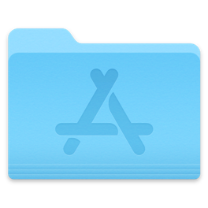
Applications⌘N：新建空白文稿。
扫描版 PDF 和图片：文字识别。
规则模式：离线。AI 模式：发送文稿到你选的服务。Key：你自己填，存进本机钥匙串。
空格：播放或暂停。
右键片段：恢复自动时长。
拆开和组合后：动效重配。胶囊里自选。
703 个动效，11 个分类。
一个动作一步撤销。
4K 60 帧 MP4，一镜一个文件。
系统要求：macOS 26 及以上。
703 个动效，11 个分类。分镜：文稿匹配动效。胶囊：替换动效。
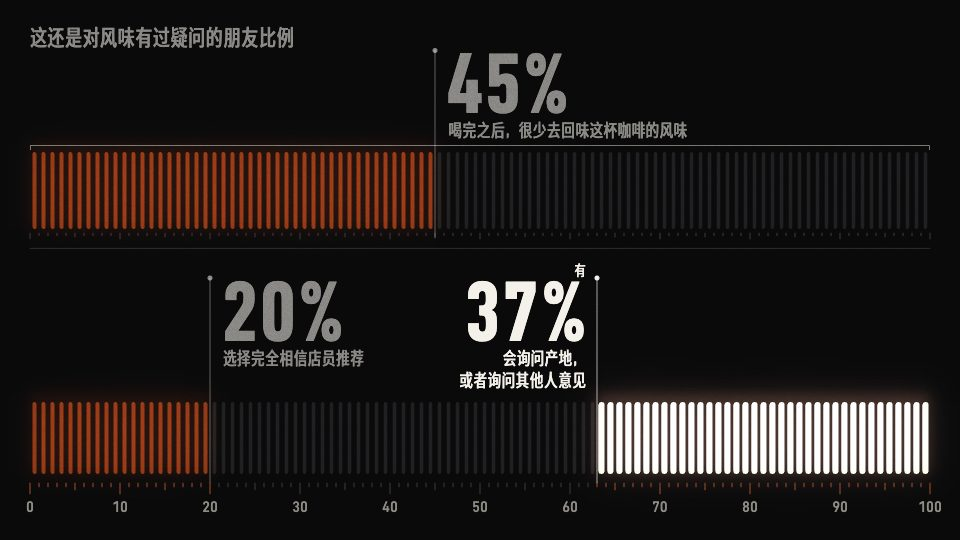
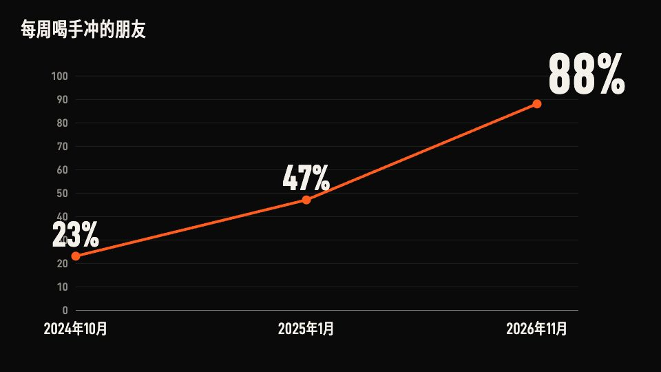
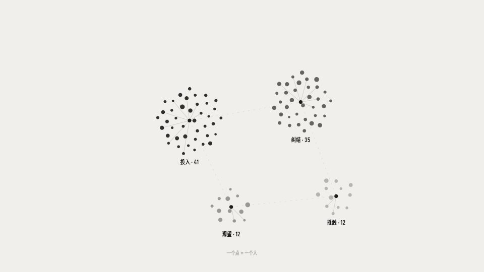
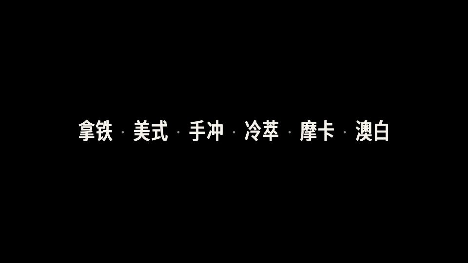
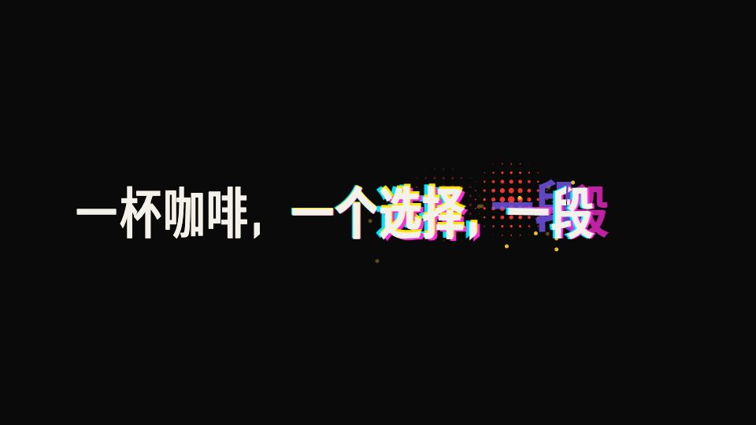
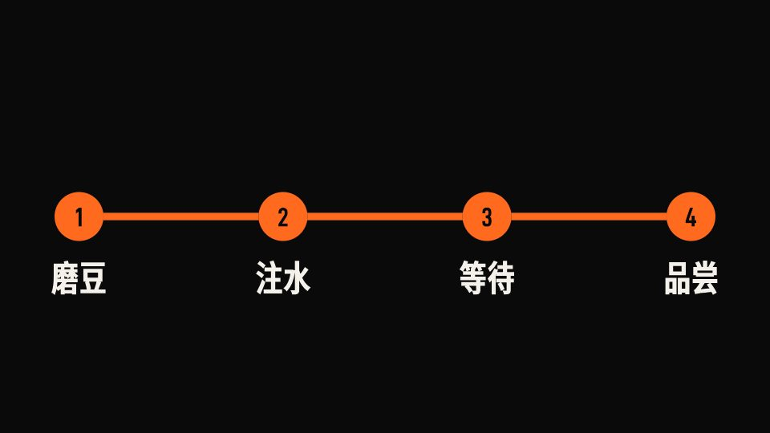
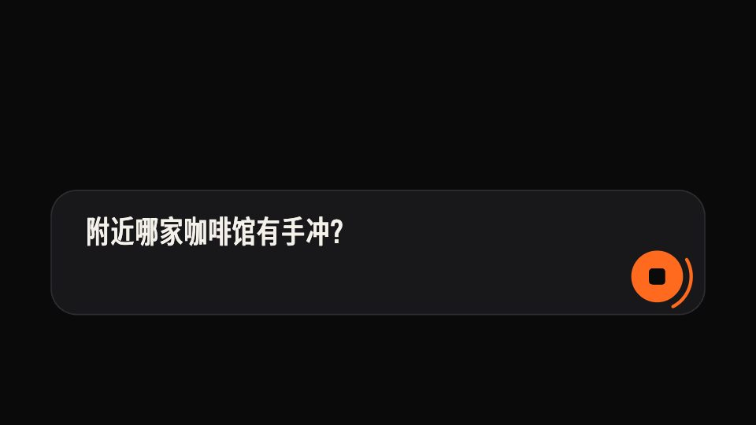
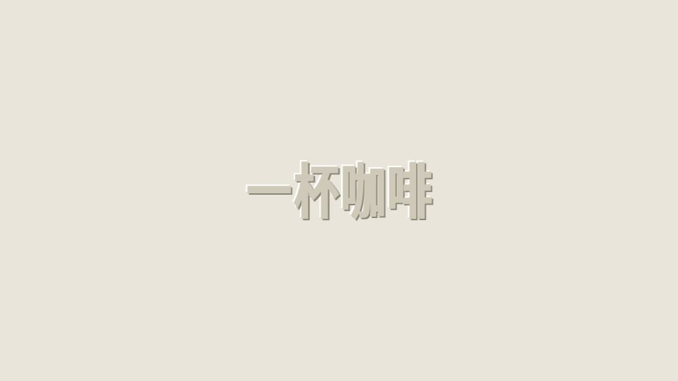
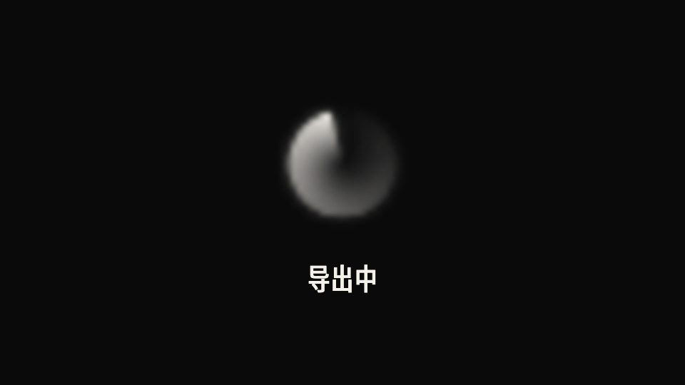
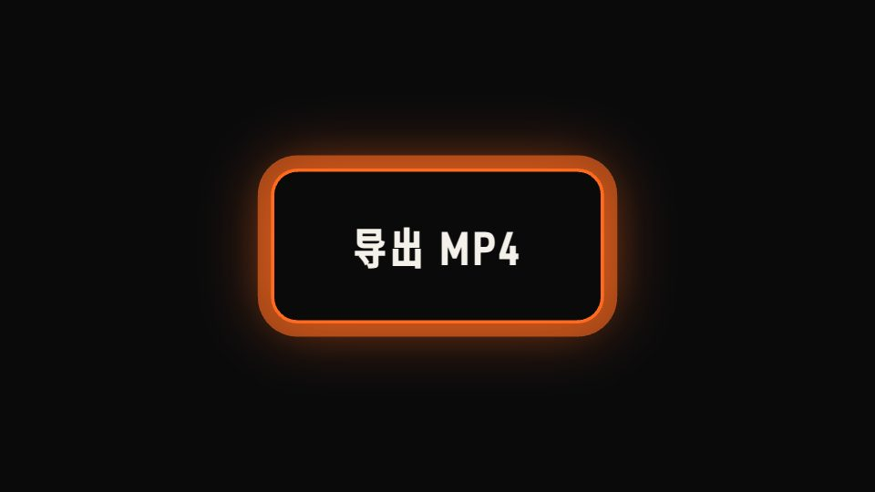
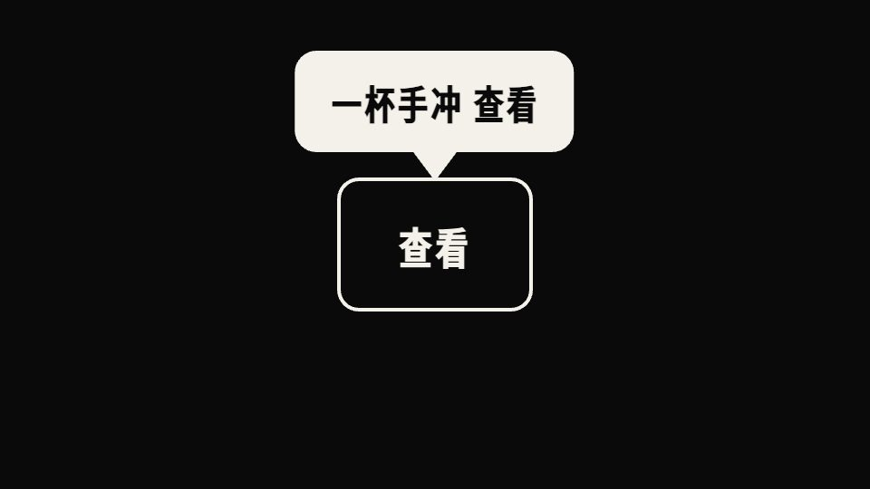
动效来源：Motion Prompt、Lieflat Charts、Colorion。效果参考：Kinetics、Verse Text。
Word、WPS、Pages、PPT、Keynote、Excel、Numbers、PDF、epub、网页、字幕、纯文本、图片。扫描版 PDF 和图片：文字识别。
示例分镜：动效和时间线一屏看全。⌘N：新建空白文稿。
macOS 26 及以上。macOS 13 到 15：文稿导入、分镜、导出可用。
规则模式：离线。A-roll 识别：离线。AI 模式：发送文稿到你选的服务。
你自己填的 Key，存进你这台电脑的系统钥匙串。安装包：零 Key。
macOS 13 及以上，Apple 芯片和 Intel 通用。这一版的测试系统：macOS 27（Apple 芯片）。其他系统和 Intel 机型的问题：提 Issue。
39 种细读图表来自 Lieflat Charts，授权条款限定非商业用途。商用视频：选其余 664 种动效，或购买作者的授权。
.dmboard，内容是 JSON 文本。
选你的电脑。国内下载走 Gitee，不用登录。替换旧版程序，原来的备份保留。
复制这段话，发给你用的 AI。
拨的是系统和 App 自带的开关。下拉搜索、负一屏卡片、应用商店的安装和更新、天气预警、快递提醒，这些功能保留。
个性化广告、广告跟踪（OAID）、智能推荐服务。
下拉搜索的热榜、负一屏资讯、浏览器信息流。
应用商店的轮播、开屏、悬浮活动、签到福利。
各 App 的「内容与营销」「活动优惠」通知。订单、物流、聊天通知保留。
广告链接跳进去的免安装小程序。关闭后跳转被系统拦下。
OPPO 广告服务、小米系统广告组件。挂起，可以恢复。
有机型脚本的手机，从插线到完成 4 到 6 分钟。
打开开发者模式和 USB 调试，用数据线连电脑。客户端里有五个品牌的图文教程。
读取型号、系统版本、机型脚本、快应用和广告组件的状态。只读。
营销通知按渠道列出，服务类渠道默认不勾。快应用和广告组件由你决定。
开始前存一份改动前的快照。执行中显示进度和日志，手机放在一边。
列出每一步的结果。关闭开发者模式，改动保留。「还原改动」可以恢复。
全部代码在 GitHub 公开。
系统更新、保修保持原样。
一条命令恢复。
点「取消」「以后再说」「不允许」。
执行过程在电脑和手机之间进行。错误日志上报，发送前由你确认。
通过 adb 连接的安卓手机可以处理营销通知、快应用和广告组件。App 里的开关需要机型脚本。
| 品牌 | 机型 | 系统 | 状态 |
|---|---|---|---|
| OPPO | Find X10 Pro Max | ColorOS 17 | 营销通知 · 真机验证App 开关 · 参考脚本 |
| OPPO | Find N6 | ColorOS 16 | 机型脚本 |
| 一加 | Ace 2 Pro | ColorOS 14 | 机型脚本真机验证 |
| 荣耀 | PNM-AN10 | MagicOS 10 | 机型脚本真机验证 |
| vivo | X300 Ultra | OriginOS 6 | 机型脚本营销通知 · 真机验证 |
| 小米 | Xiaomi 18 Pro Max · 18 Fold | HyperOS 4 | 机型脚本 |
| 三星、华为（安卓）、魅族等 | — | — | 营销通知快应用广告组件 |
| 华为 | 原生鸿蒙 HarmonyOS NEXT | — | HDC 连接 · 范围外 |
表里没有你的手机：客户端左下角「反馈问题」→「适配新机型」。小米、Redmi 需要打开开发者选项里的「USB 调试（安全设置）」。
屏幕左上角苹果图标 → 关于本机。「芯片」一栏写 Apple M 开头的是 Apple 芯片，写 Intel 的是 Intel 芯片。
安装程序没有代码签名。点「更多信息」→「仍要运行」。
到微软官网下载安装「WebView2 Evergreen Bootstrapper」，然后打开本程序。安装后提示没有消失，把弹窗括号里的原文发到反馈里。
用的是便携版（zip 解压出来的）时，提示可能不是真的缺 WebView2，而是解压出来的文件被 Windows 标成「来自网络」、加载时被拦住了：对下载的 zip 点右键 →「属性」→ 勾选「解除锁定」→ 确定，重新解压后再打开；zip 已经删了，就在解压出来的文件夹里按住 Shift 点右键 →「在此处打开 PowerShell 窗口」，粘贴 Get-ChildItem . -Recurse -File | Unblock-File 回车。安装版不受影响。
换一根能传数据的线；手机通知栏里 USB 用途选「传输文件」；手机弹窗点「允许 USB 调试」。荣耀、华为打开「仅充电模式下允许 ADB 调试」；三星装三星 USB 驱动。退出电脑上的手机助手和安卓模拟器。
开发者选项里打开「USB 调试（安全设置）」，需要插 SIM 卡、登录小米账号。
不会。不 root，不解锁，不改系统分区。用到的是开发者选项和系统自带的设置项。
会剩一些：浏览器搜索框的轮播热词没有开关；新装的 App 带着广告跟踪和营销通知，装新 App 后跑一次客户端。第三方 App 自己的开屏广告不在范围内。
客户端左下角「还原改动」：恢复快应用、恢复挂起的广告组件、重新打开关掉的营销通知。App 里的开关按清单路径打开。